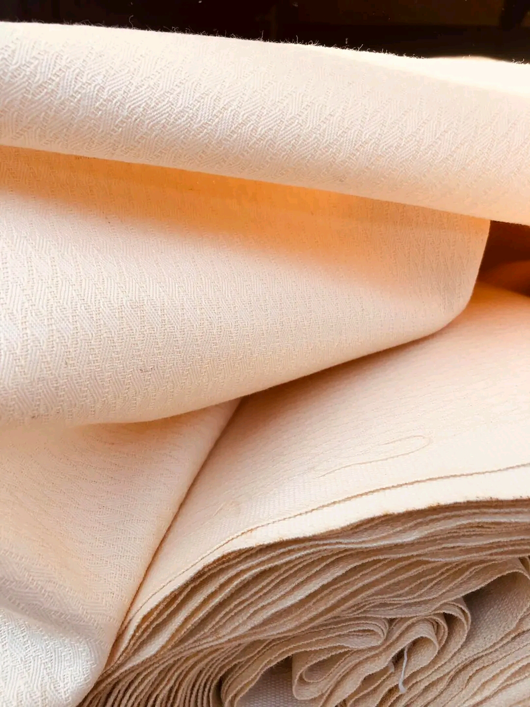
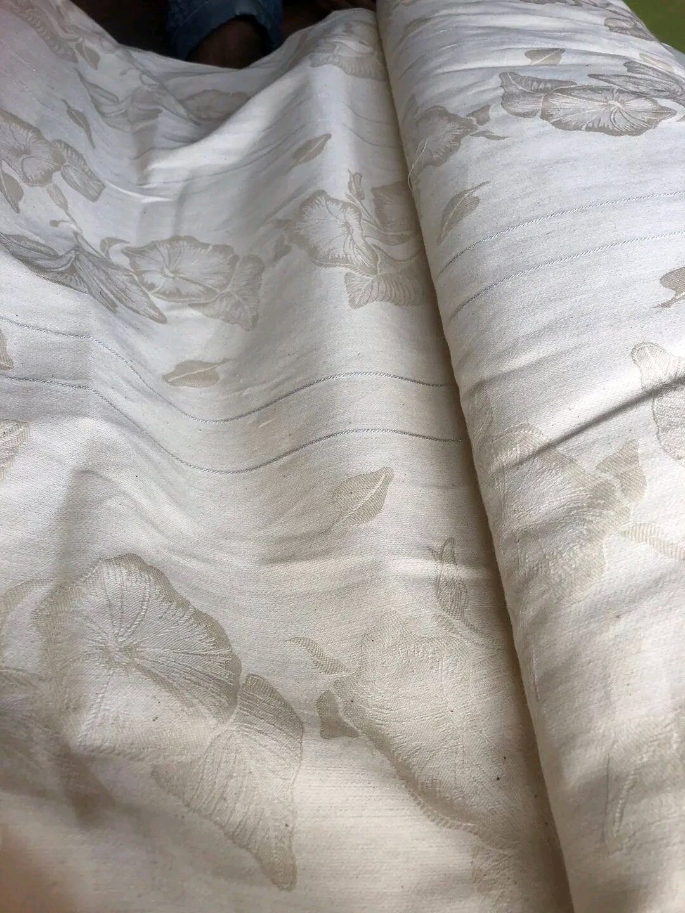

Le Lamba Soga est un type de tissu traditionnel malgache, notamment originaire de la région de Fianarantsoa.

Qu'est ce que le lamba soga?
Le Lamba Soga est un tissu de soie ou de coton, souvent décoré de motifs traditionnels et de couleurs vives. Il est fabriqué à la main par les artisans locaux de Fianarantsoa, qui utilisent des techniques traditionnelles pour créer des tissus de haute qualité.


Caractéristiques
- Motifs traditionnels: Les tissus sont souvent décorés de motifs traditionnels malgaches, tels que des dessins géométriques, des fleurs et des animaux.
- Couleurs vives: Les tissus sont souvents teints avec des couleurs vives naturelles, qui donnent au lamba soga sont aspect caractéristique.
- Qualité du tissu: Le Lamba Soga est fabriqué avec des matériaux de haute qualité, tels que la soie ou le coton, ce qui lui donne une texture douce et résistante.
Utilité
- Vêtements traditionnels: Le Lamba Soga est souvent utilisé pour confectionner des vêtements traditionnels malgaches, tels que des lamba (écharpes) et des akanjo (chemises).
- Décoration: Le tissu peut être utilisé pour décorer les murs, les meubles et les objets.
- Cadeaux: Le Lamba Soga est souvent offert en cadeau à des occasions spéciales, telles que des mariages et des fêtes traditionnelles.

Importance
Le Lamba Soga est un élément important de la culture malgache, notamment pour les Betsileo de Fianarantsoa. Il est considéré comme un symbole de l'identité et de la tradition malgache. La fabrication et l'utilisation du Lamba Soga sont également une source de revenus pour les artisans locaux. C'est un tissu traditionnel malgache unique et précieux, fabriqué à la main par les artisans locaux de Fianarantsoa. Ses motifs traditionnels, ses couleurs vives et sa qualité en font un objet d'art et un élément important de la culture malgache.